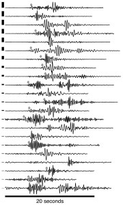

Glaciers and parts of ice sheets that end in the ocean are the most rapidly shrinking glaciers on earth, but are so poorly understood that they are also a dominant source of uncertainty in sea level rise projections. My research identifies the factors that control the rate at which these glaciers calve icebergs, melt, and flow into the ocean.


My research is focused on understanding glacier dynamics, such as the controls on flow speed and terminus position. Changes in speed and terminus position have a major influence on glacier and ice sheet mass balance, and therefore the contribution of glaciers and ice sheets to sea level rise. I have addressed these topics at Alaskan glaciers as well as the Greenland and Antarctic Ice Sheets. Within this framework, iceberg calving, subglacial processes, and glacier-generated seismicity are particular focuses of my recent studies.
More information on my most significant projects to date can be found through the links below the "Research" menu item, above. These include:
- Ice-ocean interactions and glacier variability in Greenland, in which I identify the short-term processes governing iceberg calving, and the glacier response to calving.
- Iceberg calving and submarine melt at Yahtse Glacier, in which I identify the seismogenic processes during iceberg calving, controls on the variability of iceberg calving, and the importance of submarine ice melting.
- Glacier hydrology and basal motion at Kennicott Glacier, in which I demonstrate that changes in water storage, and the evolving nature of the subglacial hydrologic system govern the rates of glacier basal motion.
Our lab group's internal, working manual is hosted here, and includes sections on supporting one another, life and work at UIdaho, our hardware resources, and computing best practices. Our goal is that the lab manual will be communally updated and serve as a living reference for group members.
Projects
Tidewater glacier change in West Greenland
I am currently working to better identify the factors controlling iceberg calving at adjacent tidewater glaciers in Western Greenland. Working as part of a team during the 2013…
Iceberg calving and submarine melt at Yahtse Glacier
Many of the most rapid losses of ice from glaciers in Alaska, Greenland, Antarctica, and elsewhere are driven by increases in the rates of iceberg calving and submarine melt.…
Glacier hydrology and motion at Kennicott Glacier
Water within and at the base of glaciers has a dramatic impact on the rate of glacier ice flow. However, the connection between water and ice flow has been uncertain. At one…
Archive: Greenland Calving Validation
This data archive accompanies Amaral et al., under review at JGR-ES These data comprise observations and derived data products from 50 marine-terminating glaciers in Greenland…
Other projects include glacier moss balls, mega-scale glacial lineations (MSGLs) and the WAIS Divide ice core.